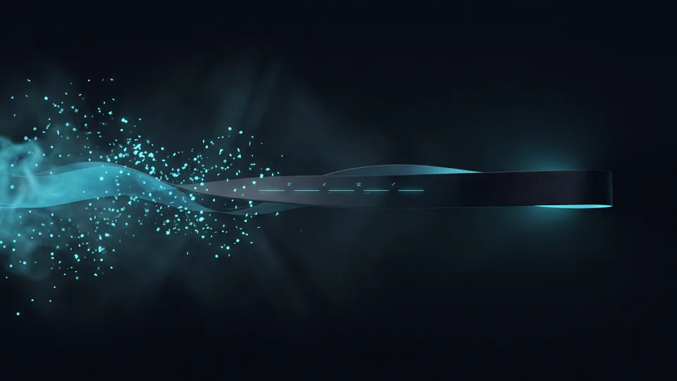

Backlink Çalışması Sonuçları Ne Zaman Görünür?
Yeni bağlantıların uzun kuyruklu ifadelerdeki ilk yansımasını çoğu projede 8 ila 16 hafta arasında görüyoruz; ana ifadedeki değişim daha sonra gelir. Bu aralık üç ayrı gecikmenin toplamıdır: tarama, değerlendirme ve rekabet gecikmesi. Sektör doygunluğu yüksekse süre uzar. Alan adı gençse ilk kıpırdanma ikinci ayı bulabilir. Beklentiyi bu üç kalem üzerinden kuruyoruz.
Backlink, başka bir siteden sizin sayfanıza verilen ve arama motorunun izlediği referans bağlantıdır. Motor önce tarar, sonra kaynağın güvenilirliğini ölçer, en son etkiyi aktarır. Bir backlink çalışması işte bu üç adımın toplam süresidir.
Hızı belirleyen şey sabırsızlık değil, düzenli yayın temposudur. Tek seferde otuz bağlantı almak, haftada iki bağlantı almaktan daha yavaş sonuç verir. SEO hizmetlerimiz kapsamında bu tempoyu takvime bağlıyoruz.
Keşif Aşaması Neden Beklemek İster?
Bir bağlantı yayına girdiği gün motorun radarına düşmez. Kaynak sayfanın taranma sıklığı belirleyicidir. Canlı yayın yapan haber sitelerinde keşif çoğu zaman birkaç gün içinde gerçekleşir. Seyrek güncellenen bir dizinde aynı bağlantı haftalarca görünmez kalır. Kaynağın canlılığı, bir backlink çalışması takviminin ilk maddesidir.
İlk Hareket Hangi Sinyalle Başlar?
İlk sinyal sıralamada değil, taranma davranışında belirir. Motor hedef sayfayı daha sık ziyaret etmeye başlar. Sonrasında uzun kuyruklu ifadelerde küçük sıçramalar çıkar. Ana ifadedeki konum değişimi ise sıranın en sonundadır. Diziliş, backlink profilinin olgunlaştığını gösterir.
Otorite Kazanımı Hangi Aşamalardan Geçer?
Otorite kazanımı dört aşamada ilerler: keşif, doğrulama, ağırlıklandırma ve yerleşme. Bu dört aşama takvimde beş banda yayılır ve hiçbirini atlayamayız. Keşif günlerle, doğrulama haftalarla, yerleşme aylarla ölçülür. Bir backlink çalışması dört aşamayı tamamlamadan kalıcı konum üretmez. Aşamaların sırası da projeden projeye değişmez.
Otorite, bir alan adının kendi konusunda güvenilir sayılma derecesidir. Derece tek bağlantıyla değişmez; backlink çalışması birikimle otorite kurar. Takvimi beş banda bölüyoruz ve her bandın kendi beklentisi var.
- 0-2 hafta: bağlantının keşfi ve dizine girişi
- 3-6 hafta: kaynak sitenin konu uyumunun tartılması
- 7-12 hafta: otorite katkısının hedef sayfaya işlenmesi
- 3-6 ay: konumun oynaklığını kaybedip yerleşmesi
- 6-12 ay: birikimin alan adının tamamına yayılması
Bantlar netleşince tartışma kısalıyor; backlink çalışmasının hangi ayda ne getireceğini önceden biliyoruz.
Bağlantının Yaşı Neden Önemlidir?
Yeni bir bağlantı, altı ay eskisiyle aynı ağırlığı taşımaz. Zaman içinde kaynak sayfa trafik alır, kendi referanslarını toplar. Kaynak güçlendikçe verdiği dış bağlantı da güçleniyor. Dolayısıyla bugün kurulan referansın asıl katkısı gelecek çeyrekte belirir. Ölçümü ilk aya sıkıştıran ekipler, henüz olgunlaşmamış bir eğriye bakıp doğru kurguyu iptal ediyor.
Tek Seferlik Atak mı, Sürekli Tempo mu?
Kısa sürede toplanan büyük bağlantı yığınları çoğunlukla dalgalanma yaratır ve geri çekilir. Düzenli tempo eğriyi yavaşça yukarı taşır. Aylık altı ila on nitelikli bağlantı, çoğu KOBİ sitesi için sürdürülebilir bir banttır. Bandın üstüne çıktığımız projelerde hız değil dalgalanma arttı; bu yüzden tempoyu sabit tutuyoruz.
İlk 90 Günde Neyi Beklemek Gerçekçi?
İlk 90 gün sıralama değil altyapı dönemidir. Bu üç ayda bağlantıların dizine girmesini, marka aramalarının artmasını ve uzun kuyruklu ifadelerde ilk hareketleri bekleriz. Ana ifadede kalıcı sıçrama genelde dördüncü aydan sonra gelir. Erken karar, doğru kurgulanmış bir backlink çalışması bütçesini boşa çıkarır.
Üç aylık pencere yatırımın geri dönüşünü değil yönünü gösterir. Yön doğruysa eğri yavaş da olsa yukarı bakar. Dijital kanala geçen işletme sayısı her yıl büyüyor; ETBİS raporu bu tabloyu ortaya koyuyor. Rekabet arttıkça beklenen süre de uzuyor.
Hedef sayfanın konusu zayıfsa gelen otorite tutunamaz. Bu yüzden içerik stratejisi ile bağlantı takvimini aynı masada kurguluyoruz.
90 Günlük Pencerede Hangi Göstergeye Bakıyoruz?
Tek bir sayı üç ay boyunca yanlış soruyu sordurur. Dizine giren bağlantı oranını, referans veren alan adı sayısını ve hedef sayfanın gösterim eğrisini birlikte izliyoruz. Üçü de yatay kalıyorsa kurguyu gözden geçiririz. İkisi kıpırdıyorsa backlink çalışması yolunda demektir.
Marka Araması Neden Erken Uyarı Verir?
Marka adınızın arama hacmi, bağlantıların yarattığı görünürlüğün en erken habercisidir. Yeni kaynaklarda adınız geçtikçe merak eden kullanıcı doğrudan arama yapar. Marka aramaları sıralamadan haftalar önce artmaya başlar.
Süreyi Uzatan Dört Etken
Süreyi uzatan etkenlerin başında sektör rekabeti, hedef sayfanın teknik durumu, bağlantı kaynağının konu uyumu ve yayın temposundaki boşluklar gelir. Dördü bir arada olduğunda beklenen süre belirgin biçimde uzar. Rekabetin düşük olduğu niş bir pazarda ise sonuç sekizinci haftada görünebilir. Bu dört kalemi ilk hafta ölçüp takvimi ona göre kuruyoruz.
Birinci etken rekabet, yani aynı ifade için mücadele eden nitelikli sayfa sayısıdır. Sayı büyüdükçe her bağlantının payı küçülür. Aynı ifadede köklü rakipler varsa, aynı kaynak listesi daha az yer değiştirir.
İkinci etken hedef sayfanın teknik durumudur. Sunucu yavaşsa ya da yönlendirmeler bozuksa gelen otorite hedefe ulaşmadan dağılır. Teknik SEO tarafını düzeltmeden bir backlink çalışması için ayrılan bütçe boşa akar.
Dördüncü etken yayın temposundaki boşluklardır. İki ay bağlantı, bir ay sessizlik biçiminde ilerleyen takvimlerde motor kaynağı yeniden tartıyor ve kazanılan ivme burada kesiliyor. Üçüncü etkene, yani kaynak uyumuna aşağıda ayrı bir başlık ayırdık.
Rekabet Yoğunluğu Süreyi Nasıl Katlar?
Finans, sağlık ve hukuk gibi alanlarda ilk sayfadaki siteler yıllardır bağlantı biriktiriyor. Bu birikimi yakalamak aylar değil çeyrekler ister. Küçük ölçekli bir hizmet işletmesinde tablo tersine döner; on beş nitelikli dış bağlantı bile fark yaratır. Süre tahminini sektör verisiyle kuruyoruz; backlink çalışması bu nedenle sabit takvimle satılmaz.
Kaynak Uyumu Neden Süreyi Kısaltır?
Üçüncü etken kaynak uyumudur. Konusu sizinle örtüşen bir siteden gelen referansı motor daha hızlı işler. Mobilya satan bir markaya iç mimarlık blogundan gelen bağlantı, genel bir dizin girişinden kat kat değerlidir. Uyum yüksekse doğrulama aşaması kısalır. Bağlantı kaynaklarını seçerken önce konu haritası çıkarıyoruz.
“2024 yılında 600 bin 800 olan e-ticaret yapan işletme sayısı, 2025'te 634 bin 611'e yükseldi.”
— Ticaret Bakanlığı, Türkiye'de E-Ticaretin Görünümü 2025
Backlink Çalışması İçin Uzman Ekiple İlerleyin
Bağlantı kurgusu, takvim disiplini ve kaynak seçimi bir arada yürüdüğünde süre kısalır. Ekibimiz bu üç kalemi tek planda topluyor ve her ay ölçülebilir bir rapor bırakıyor. Beklentiyi ilk gün netleştiriyoruz; hangi ayda neyi göreceğinizi yazılı olarak paylaşıyoruz. Bir backlink çalışması boyunca sürprizle karşılaşmıyorsunuz.
Bir backlink çalışması, ajans ile marka arasında ortak takvim gerektirir. Kaynak listesini birlikte onaylıyor, yayın sırasını birlikte belirliyoruz. Böylece hangi haftada kaç bağlantının devreye gireceğini önceden biliyorsunuz.
Sürenin en büyük düşmanı belirsizliktir. Projenizin rekabet seviyesini ölçüp gerçekçi bir zaman çizgisi çıkaralım; teklif formunu doldurmanız yeterli.
Takvimi Nasıl Birlikte Kuruyoruz?
İlk hafta rekabet ölçümü yapıyoruz, ikinci hafta kaynak listesini sunuyoruz. Onay çıktıktan sonra planlanan backlink listesi yayına giriyor. Her ayın sonunda hangi bağlantının dizine girdiğini ve hangi ifadenin kıpırdadığını tek sayfada paylaşıyoruz. Böylece herkes aynı takvime bakıyor.

Backlink Etkisinin Zaman Çizgisi: Hangi Dönemde Ne Beklenir?
| Dönem | Motorun Yaptığı İş | Görülen Sinyal | Karar Önerisi |
|---|---|---|---|
| 0-2 hafta | Bağlantıyı tarar, dizine alır | Tarama sıklığı artar | Bekleyin, ölçmeyin |
| 3-6 hafta | Kaynağın konu uyumunu tartar | Uzun kuyrukta küçük hareket | Tempoyu koruyun |
| 7-12 hafta | Otorite katkısını sayfaya işler | Marka aramalarında artış | İlk ara değerlendirme |
| 3-6 ay | Konumu oynaklıktan çıkarır | Ana ifadede kalıcı yükseliş | Bütçeyi ölçekleyin |
| 6-12 ay | Birikimi alan adına taşır | Yeni sayfalar hızlı sıralanır | Kaynak çeşitliliğini artırın |
Kapsamınıza uygun yol haritasını birlikte çıkaralım; adımları ve zamanlamayı netleştirelim.
Kapsam çıkaralım Hizmet sayfasını görSıralama, bağlantı yayına girdiği an değil, motor o bağlantıya güvendiği an değişir. Bu güven haftalara değil aylara yayılır. Dış bağlantı programınızı kısa vadeli bir kampanya gibi değil, çeyreklik bir yatırım gibi planlayın. Doğru kaynak, düzenli tempo ve sabır bir araya geldiğinde eğri yukarı döner. Biz de bu takvimi sizin adınıza takip ediyoruz.